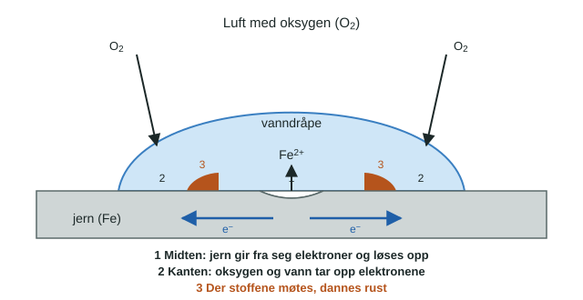

Hva er korrosjon?
Rør, tanker, ventiler og bolter i et prosessanlegg brytes sakte ned av vann, luft og kjemikalier. Det kalles korrosjon. Korrosjon kan føre til lekkasjer, stans og ulykker. Derfor er det en stor del av vedlikeholdet å oppdage og hindre den.
Metall som brytes ned
Korrosjon er at et metall reagerer med stoffer rundt seg og sakte blir ødelagt. Den vanligste formen er rust på jern og stål. Rust er det rødbrune, porøse stoffet som dannes når jern korroderer.
De fleste metaller finnes i naturen som malm, der metallet er bundet til oksygen eller andre stoffer. Det krever mye energi å lage rent metall av malmen. Korrosjon er metallet som «går tilbake» til en tilstand som ligner malmen.
Hva skjer når jern ruster?
Korrosjon er en kjemisk reaksjon der elektroner flyttes fra ett stoff til et annet. Se på en vanndråpe som ligger på en jernplate:

- Jernet gir fra seg elektroner. Jernatomer blir til jernioner, Fe2+, og løses i vannet. Her forsvinner metall. Dette skjer i midten av dråpen, der det er lite oksygen, fordi oksygenet må gjennom mye vann for å komme dit. At et stoff gir fra seg elektroner, kalles oksidasjon.
\[ \ce{Fe -> Fe^2+ + 2e-} \]
- Oksygen og vann tar opp elektronene. Elektronene går gjennom metallet til et sted der oksygen fra lufta kommer til. Der dannes hydroksidioner, OH−. At et stoff tar opp elektroner, kalles reduksjon.
\[ \ce{O2 + 2H2O + 4e- -> 4OH-} \]
- Det dannes rust. Jernionene og hydroksidionene møtes i vannet. Med mer oksygen blir de til rust: jernoksid som inneholder vann, forenklet skrevet Fe2O3 · xH2O.
Legg merke til at metallet forsvinner ett sted (midten), mens rusten legger seg et annet sted. Hvor mye rust du ser, sier derfor lite om hvor mye metall som er borte. Rusten kan ligge et annet sted enn gropa, den kan flasse av, og korrosjonen kan også skje på innsiden av røret.
Reaksjoner der elektroner flyttes, kalles redoksreaksjoner. Kjemien bak dem lærer du i temaet Kjemiske prinsipper, i emnet Elektrokjemi (kommer). Hva ioner er, kan du lese om på siden Ioner og ionebinding.
Tre ting må være til stede
Jern korroderer bare når alle disse tre er til stede:
- metall som kan gi fra seg elektroner
- vann (eller fuktighet) som ionene kan bevege seg i
- oksygen (eller et annet stoff, for eksempel en syre, som kan ta opp elektronene)
Rust dannes bare når det er oksygen. I syre uten oksygen korroderer jernet likevel, men da dannes det hydrogengass i stedet for rust.
Vann med oppløste ioner kalles en elektrolytt. Jo flere ioner vannet inneholder, jo bedre leder det strøm, og jo fortere går korrosjonen. Fjerner du én av de tre tingene, stopper korrosjonen i prinsippet. I praksis klarer man sjelden å fjerne alt, så målet er å bremse korrosjonen mest mulig. Det er grunnlaget for all korrosjonsbeskyttelse. Det lærer du mer om senere i emnet.
Hva gjør at korrosjonen går fortere?
| Forhold | Hvorfor | Eksempel fra anlegget |
|---|---|---|
| salt (klorid) | Gir mange ioner i vannet, og klorid bryter ned beskyttende lag på metallet. | sjøvann i kjølesystemer, salt luft ved kysten, veisalt |
| syre (lav pH) | Hydrogenionene (H+) i syren tar opp elektroner fra metallet, så metallet løses opp raskere. | sure prosessvæsker, kondensat med oppløst CO2 |
| høy temperatur | Kjemiske reaksjoner går fortere når det er varmt. | varmevekslere, dampledninger |
| vann som blir stående | Fuktigheten forsvinner ikke, så korrosjonen fortsetter. | lavpunkter i rør, under isolasjon, i sprekker og skjøter |
Tørr luft gir nesten ingen korrosjon. Derfor ruster utstyr innendørs i et tørt lager mye langsommere enn utstyr ute.
Ikke alle metaller ruster
Ordet rust brukes bare om jern og stål. Andre metaller korroderer også, men noen beskytter seg selv. Aluminium og rustfritt stål danner et tynt, tett oksidlag på overflaten. I rustfritt stål er det kromet i legeringen som danner laget. Laget stenger vann og oksygen ute. Rusten på jern er derimot porøs og flasser av, så korrosjonen kan fortsette innover i metallet.
Rustfritt stål tåler vanligvis vann godt. Men klorid kan skade oksidlaget, og i sjøvann som blir stående og i trange sprekker kan stålet få små, dype groper (groptæring). I saltsyre tæres rustfritt stål raskt over hele flaten.
Hvorfor er korrosjon et problem i prosessanlegget?
- Lekkasjer: Rør og tanker får tynnere vegger og kan begynne å lekke kjemikalier, damp eller gass. Det kan gi brann, forgiftning og utslipp.
- Svekket utstyr: Bolter, flenser, bjelker og løfteutstyr mister styrke og kan svikte.
- Stans og kostnader: Utstyr må repareres eller byttes, og produksjonen kan stoppe.
- Dårligere produkt: Rust og metallioner kan forurense produktet.
- Feil målinger: Instrumenter og følere kan korrodere og vise feil.
Hvor fort et metall korroderer, kalles korrosjonshastigheten. Den oppgis ofte i millimeter per år (mm/år): hvor mye tynnere veggen blir hvert år.
Oppgave: Et stålrør har en veggtykkelse på 6,0 mm da det er nytt. Målinger viser at veggen blir 0,20 mm tynnere per år. Røret må byttes før veggen blir tynnere enn 3,0 mm. Hvor mange år kan røret brukes?
Løsning:
- Hva vet vi? Ny vegg 6,0 mm, minste tillatte vegg 3,0 mm, korrosjonshastighet 0,20 mm/år.
- Hvor mye kan korrodere bort? 6,0 mm − 3,0 mm = 3,0 mm.
- Del på korrosjonshastigheten: \( \dfrac{3{,}0\ \text{mm}}{0{,}20\ \text{mm/år}} = 15\ \text{år} \)
Svar: Røret kan brukes i ca. 15 år. I praksis måles veggtykkelsen jevnlig, fordi korrosjonen kan gå fortere enn ventet.
Et rustlag kan skjule at veggen under er farlig tynn. Meld fra hvis du ser rust, lekkasjer, bobler i malingen eller rødbrune striper ved flenser og sveiser. Bruk aldri løfteutstyr, kjettinger eller sjakler med tydelig korrosjon. Åpne ikke et korrodert rør eller en flens før systemet er trykkløst og tømt.
Test deg selv
1. Hva er korrosjon?
- at metall smelter når det blir varmt
- at metall reagerer med stoffer rundt seg og sakte blir ødelagt
- at metall blir magnetisk
Korrosjon er en kjemisk reaksjon mellom metallet og for eksempel vann, oksygen eller syre. Rust på jern er den vanligste formen.
2. Hva skjer med jernet der det korroderer?
- Jernatomene gir fra seg elektroner og blir jernioner.
- Jernatomene tar opp elektroner fra vannet.
- Jernet blir til oksygen.
Fe → Fe2+ + 2e−. Jernionene går ut i vannet, og metallet blir tynnere. Det kalles oksidasjon.
3. Et stålrør står inne i en tørr hall. Hvorfor ruster det nesten ikke?
- Det er for lite metall.
- Det mangler vann, så korrosjonen kan ikke skje.
- Det mangler oksygen inne i hallen.
Metall, vann og oksygen må være til stede samtidig. I tørr luft mangler vannet.
4. Hvilket kjølevann gir raskest korrosjon av et stålrør?
- kaldt ferskvann
- kaldt destillert vann
- varmt sjøvann
Sjøvann inneholder mye salt (klorid), og høy temperatur gjør at reaksjonen går fortere.
5. Hvorfor kan et rør være farlig selv om rustlaget ser tynt ut?
- Rust er giftig.
- Metallet kan være tært bort et annet sted enn der rusten ligger.
- Rust gjør røret tyngre.
Metallet løses opp ett sted, mens rusten legger seg et annet sted. Rusten kan også flasse av, og korrosjonen kan skje på innsiden av røret. Veggtykkelsen må derfor måles.
Ordliste
| Begrep | Forklaring | Engelsk |
|---|---|---|
| korrosjon | At et metall reagerer med stoffer rundt seg, for eksempel vann og oksygen, og sakte blir ødelagt. | corrosion |
| rust | Det rødbrune, porøse stoffet som dannes når jern og stål korroderer. Rust er jernoksid som inneholder vann. | rust |
| oksidasjon | Reaksjon der et stoff gir fra seg elektroner. Når jern korroderer, blir jernet oksidert. | |
| elektrolytt | Væske med oppløste ioner, som leder strøm. Vann med salt er en god elektrolytt. | |
| oksidlag | Tynt lag av metalloksid på overflaten av et metall. Et tett oksidlag, som på aluminium og rustfritt stål, beskytter metallet under. | |
| korrosjonshastighet | Hvor fort et metall korroderer, ofte oppgitt som hvor mange millimeter veggen blir tynnere per år (mm/år). | corrosion rate |
| veggtykkelse | Tykkelsen på veggen i et rør eller en tank. Den måles for å se hvor mye metall som har korrodert bort. | wall thickness |
Les mer
- Kjemien stemmer, kapitlet om redoksreaksjoner og elektrokjemi.
- Temaet Kjemiske prinsipper, emnet Elektrokjemi (kommer).
Om kildene: Teksten, eksemplene og figurene på denne siden er laget for dette nettstedet. Siden bygger på undervisningsopplegg i kjemiprosess- og laboratoriefag ved Sauda vgs, som er utarbeidet med utgangspunkt i blant annet Kjemien stemmer, Laboranten og åpne nettkilder.